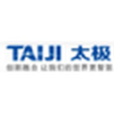

样本企业
80
四类企业均衡覆盖
融合多源指标、NLP 文本证据与随机森林预测，构建覆盖 80 家算力产业链企业的数智化风险操作系统。

太极股份84.96高风险概率 74.8%烽烽火通信84.44高风险概率 74.8%电 电科网安83.62高风险概率 72.4%启
电科网安83.62高风险概率 72.4%启 启明星辰82.34高风险概率 70.0%东
启明星辰82.34高风险概率 70.0%东 东土科技80.67高风险概率 63.5%当当虹科技80.16高风险概率 66.8%绿绿盟科技79.88高风险概率 66.5%浪浪潮软件89.45高风险概率 81.9%太太极股份84.96高风险概率 74.8%烽烽火通信84.44高风险概率 74.8%电电科网安83.62高风险概率 72.4%启启明星辰82.34高风险概率 70.0%东东土科技80.67高风险概率 63.5%当当虹科技80.16高风险概率 66.8%绿绿盟科技79.88高风险概率 66.5%
东土科技80.67高风险概率 63.5%当当虹科技80.16高风险概率 66.8%绿绿盟科技79.88高风险概率 66.5%浪浪潮软件89.45高风险概率 81.9%太太极股份84.96高风险概率 74.8%烽烽火通信84.44高风险概率 74.8%电电科网安83.62高风险概率 72.4%启启明星辰82.34高风险概率 70.0%东东土科技80.67高风险概率 63.5%当当虹科技80.16高风险概率 66.8%绿绿盟科技79.88高风险概率 66.5%融合指标评价、NLP文本识别与随机森林前瞻预测，以真实数据、人工二审与可解释模型形成完整研究证据链。